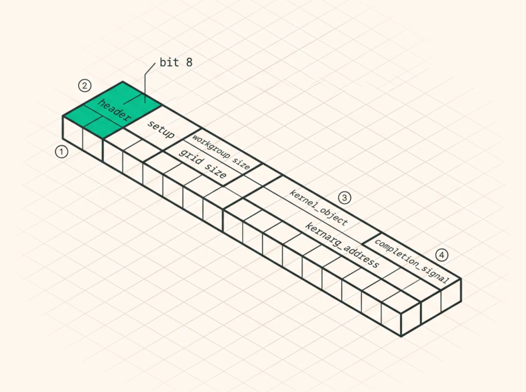
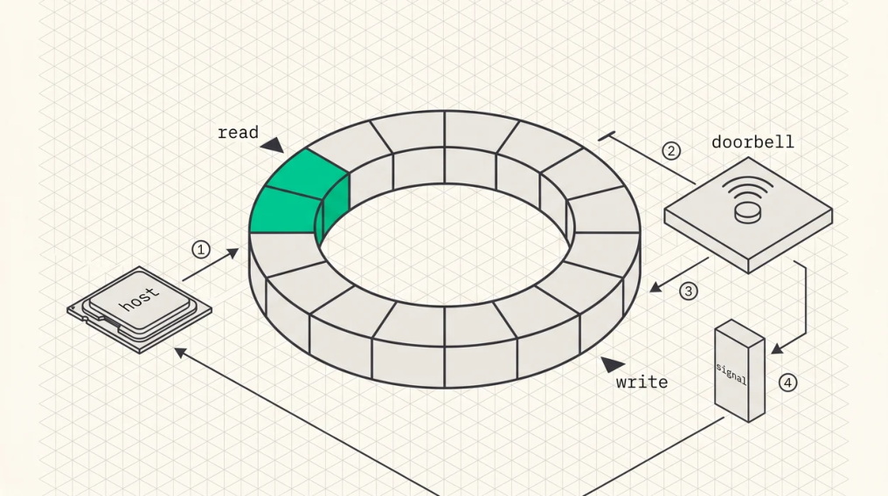

Command Queues and Dispatch
/// hsa_kernel_dispatch_packet_t (64 bytes, little-endian)
#[repr(C)]
#[derive(Debug, Clone, Copy)]
struct AqlKernelDispatchPacket {
header: u16, // 0
setup: u16, // 2 dimensions
workgroup_size_x: u16, // 4
workgroup_size_y: u16, // 6
workgroup_size_z: u16, // 8
reserved0: u16, // 10
grid_size_x: u32, // 12
grid_size_y: u32, // 16
grid_size_z: u32, // 20
private_segment_size: u32, // 24
group_segment_size: u32, // 28 LDS bytes per workgroup
kernel_object: u64, // 32 VA of the kernel descriptor
kernarg_address: u64, // 40 VA of the kernel argument buffer
reserved2: u64, // 48
completion_signal: u64, // 56 VA of an amd_signal_t
}
const _: () = assert!(core::mem::size_of::<AqlKernelDispatchPacket>() == 64);That const assertion isn’t decoration, it’s the cheapest possible test that your struct matches the ABI, it runs at compile time, and it catches the most damaging category of mistake at this layer.

O
1Sixty-four bytes exactly, and a compile-time size assertion on the struct is the cheapest ABI test you will ever write.O
2The header is 16 bits, not 32. Bit 8 is the barrier bit, which is the mechanism behind chained dispatch, and bits 9 and 10 begin the acquire fence scope.O
3The three pointers are naturally aligned at offsets 32, 40 and 56, and kernel_object precedes kernarg_address. Reversing them faults immediately, which is at least a fast failure.O
4kernel_object points at the kernel descriptor the compiler emits, the symbol ending .kd, rather than at the code entry point itself.
Three fields deserve comment. kernarg_address points at a buffer holding the kernel’s arguments laid out exactly as the compiled kernel expects, with the alignment its metadata specifies, and getting the padding wrong means the kernel reads a pointer from the middle of two other arguments.
kernel_object points at the kernel descriptor , a 64-byte structure the compiler emits under the symbol <name>.kd , not the code entry point itself, and that descriptor holds the code offset plus register and segment configuration. And completion_signal points at an amd_signal_t , a 64-byte structure whose value the command processor atomically decrements when the dispatch finishes.
The header and the barrier bit
The 16-bit header packs the packet type together with its memory-fence behaviour.
| BITS | FIELD | MEANING |
|---|---|---|
| 0–7 | packet type | 2 =KERNEL_DISPATCH |
| 8 | barrier | don’t launch until all preceding packets complete |
| 9–10 | acquire fence scope | cache invalidate before the dispatch |
| 11–12 | release fence scope | cache writeback after the dispatch |
The barrier bit is bit 8 , not bit 9, since bit 9 begins the acquire fence scope field. Setting it is the mechanism behind chained dispatch in Chapter 25, where a whole layer’s kernels go into the ring with barrier bits set and execute in dependency order behind a single doorbell and a single wait.
The fence scopes are just as load-bearing and get fumbled more often. If a kernel’s release scope is too narrow its writes may not be visible to the next kernel, let alone to a peer GPU, and the symptom is intermittent wrong results that vanish under a profiler. Cross-GPU work needs system scope, and Chapter 28 explains why.
Publishing a packet, and then the doorbell
This is the part people get subtly wrong, because the doorbell looks like the gate and isn’t. The command processor is entitled to look at any slot below the write index at any time, so what holds it off is not the doorbell, it’s the packet’s own header. A slot whose header type reads INVALID is a slot the processor will skip and come back to.
So enqueuing has four steps, in this order.
// 1. reserve a slot
letindex=queue.write_index.fetch_add(1,Ordering::Relaxed);
letslot=&mutring[(index%queue.ring_slots)asusize];
// 2. write the body with the header still INVALID
write_packet_body(slot,&dispatch);
// 3. publish: one release store to the first 32 bits hands the slot over
slot.publish_header(header_word,Ordering::Release);
// 4. ring the doorbell so the processor looks now rather than later
queue.doorbell.store(index,Ordering::Relaxed);Step 3 is the handover. Everything the processor needs must be visible before that store lands, which is what the release ordering buys, and the header has to go out as a single store rather than field by field. Writing the whole 64-byte packet including a valid header and then fencing is the common mistake: the processor may have already read a half-written slot, and the fence arrives too late to matter.
Step 4 is a wake-up, not permission. Skip it and a spinning processor may still find the packet, which is exactly why forgetting it produces an intermittent stall rather than a clean hang.
The doorbell takes the packet index , not a byte offset and not a count. Writing index + 1 tells the processor that a slot you haven’t published is ready, so it fetches a slot still marked INVALID and waits for it, and the usual symptom is a queue that stops making progress with no error anywhere.
Completion signals
The completion signal is the only reliable indicator that a dispatch is done. The command processor atomically decrements it once every workgroup has completed and its memory effects are visible at the release scope, and the host polls until it reaches the completed value.
Why not poll the output buffer instead? Because workgroup completion order isn’t defined, so the workgroup that writes the last byte of output isn’t necessarily the last to finish, and a buffer can look
complete while work is still running. Worse, without the release fence the bytes may sit in a cache the host can’t see. The signal is the only synchronisation point that means what you want it to mean.
The entire conversation with the GPU, at its simplest.
loop {1. reserve a slot and write the packet body, header left INVALID
2. publish the header with a release store
3. ring the doorbell with the packet index
4. poll the completion signal until it reads COMPLETED
5. read the result }
Every kernel goes through that loop, attention and norm and RoPE and MoE and all-reduce alike, so how tight it is sets the floor on per-token latency for anything the model does more than a handful of times.

O
1The host writes a packet into the next slot of the ring buffer, then issues a release fence so those bytes are visible before anything else happens.O
2It writes the packet index to the doorbell. Writing a count instead makes the command processor fetch a slot you never wrote, and the usual result is a hang rather than an error.O
3The command processor reads from the ring and runs the kernel. O4On completion it atomically decrements the signal, which is the only indicator that means what you want it to mean, because workgroup completion order is not defined.
One note on step 3. A pure spin burns a core and, on a shared host, can starve the very thread that needs to enqueue the next batch, so production implementations spin for a bounded number of iterations
and then fall back to an interrupt-based wait, which KFD supports through event-backed signals. Spin when you expect microseconds, sleep when you expect milliseconds.
Kernarg slot management
Every dispatch needs a kernarg buffer holding its arguments, which is trivial for a single dispatch and isn’t for chained dispatch , where multiple packets get enqueued without waiting between them. Two inflight dispatches sharing a kernarg buffer means the second’s host-side write can overwrite the first’s arguments before the command processor has read them.
The fix is a ring of pre-allocated kernarg slots indexed by a counter tracking how many dispatches remain unretired, and that counter does double duty, because it’s also what tells you when it’s safe to drop a buffer. It’s the stack’s ground truth for what the GPU is still holding.
The failure mode when you get this wrong is instructive. Not a crash, but a wrong answer that only appears under load, because the race needs the host to run ahead of the device.
Why synchronous polling
The dispatch loop is a latency-bound spin rather than I/O, so an async runtime would add a reactor and a thread pool to something measured in microseconds, introduce wakeup latency of the same order as the operation, and solve a multiplexing problem that doesn’t exist here. The loop stays fn , concurrency in the compute path comes from threads pinned to devices, and the async serving layer sits above an explicit boundary, as Chapter 3 described.
Rust patterns for the queue
Cell for hot-path interior mutability. The unretired-dispatch counter gets mutated on every dispatch through a shared reference, and Cell<usize> makes that free where RefCell would add a borrow flag and a panic path and Mutex would add an atomic read-modify-write. Cell is correct here precisely because the dispatch loop is single-threaded, and if that assumption ever changes the compiler tells you, because Cell isn’t Sync .
Owning the ring and doorbell. The Queue struct owns the ring buffer as a DeviceBuffer , the mapped doorbell page, and the indices, and Drop destroys the queue, unmaps the doorbell, and frees the ring, in that order, because destroying the queue is what guarantees the command processor has stopped reading.
The signal as a typed wrapper. A raw address becomes a Signal type with poll() , wait() , and reset() . The value isn’t the methods, it’s that the contract now has somewhere to live.
The entire conversation with the GPU is write a packet, ring a doorbell, wait for a signal. The details that bite are exact. The AQL packet is 64 bytes with pointers at offsets 32, 40, and 56, the barrier bit is bit 8 of the header, the doorbell takes the packet index and a count instead of an index hangs the queue, a release fence must precede the doorbell store, and chained dispatches need distinct kernarg slots or they race.
Exercises
Write out the 64-byte packet, byte by byte, for a 1-D dispatch of a kernel with a 256-work-item workgroup, a grid of 65,536, 8 KB of LDS, and the barrier bit set. Verify your offsets against the struct above.
Explain precisely what the command processor does if the doorbell is written with
index + 1, and why that manifests as a hang rather than an error.A kernel’s results are correct when run alone and intermittently wrong when chained behind another kernel. List three plausible causes in order of likelihood and the experiment that distinguishes them.
Build: implement the dispatch loop with a bounded spin followed by an event-based wait. Measure completion latency of a trivial kernel for both strategies and find the spin bound where they cross over.